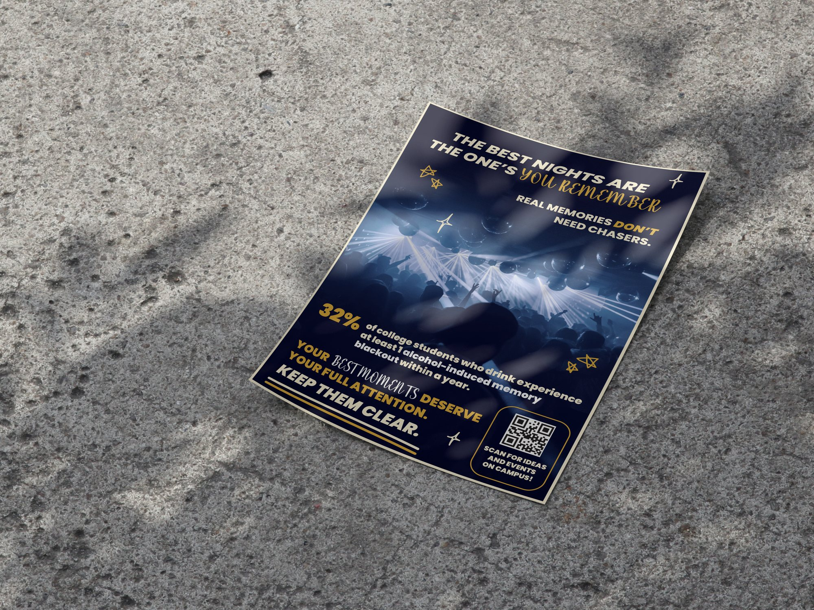
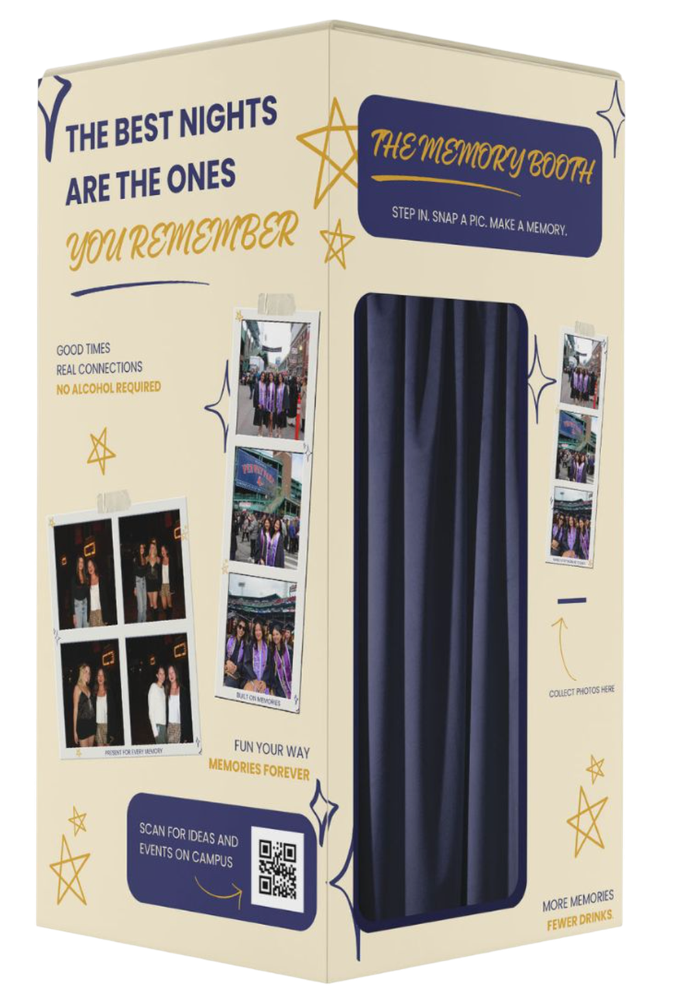
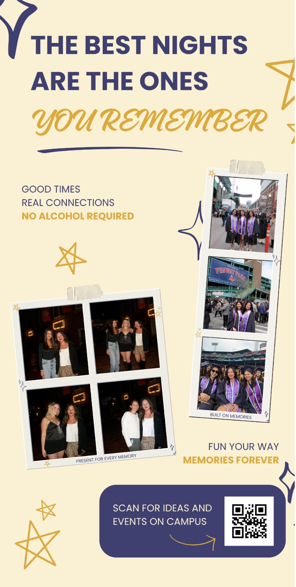
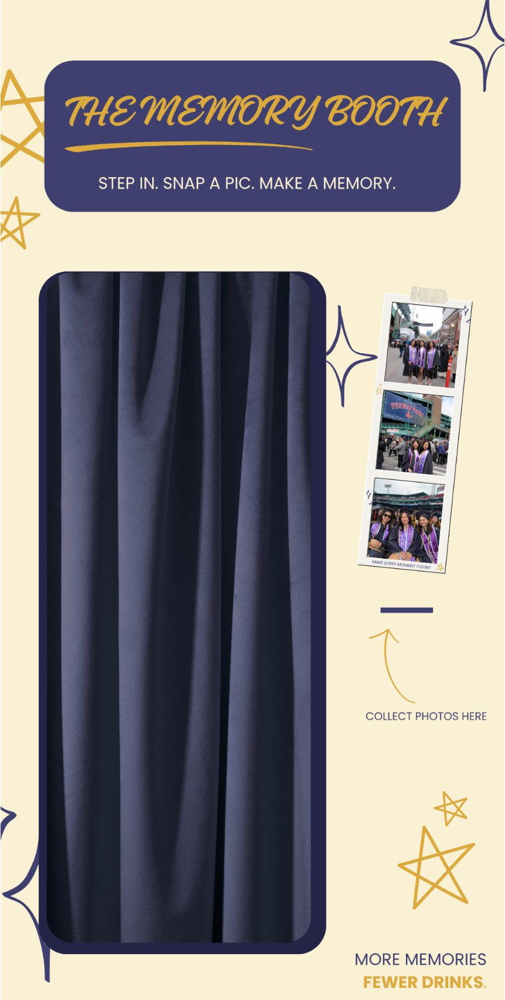
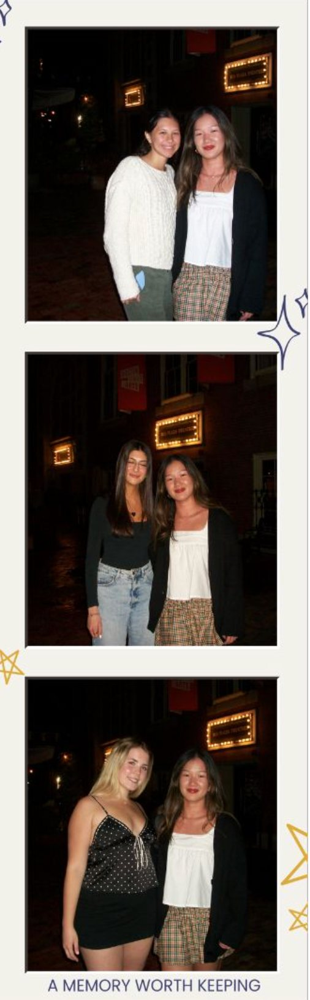
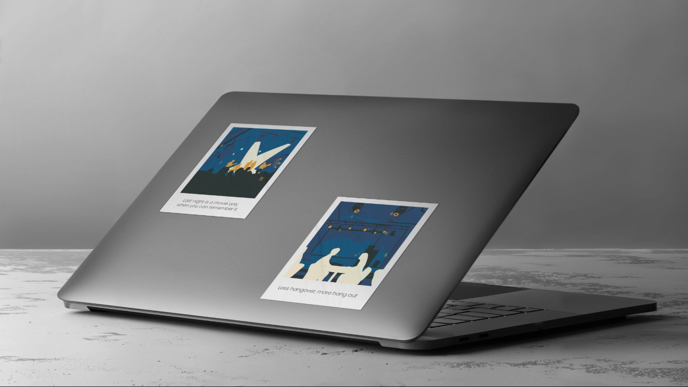
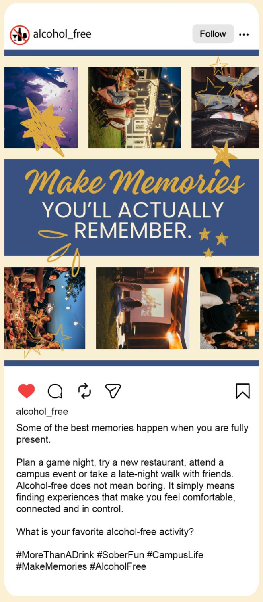
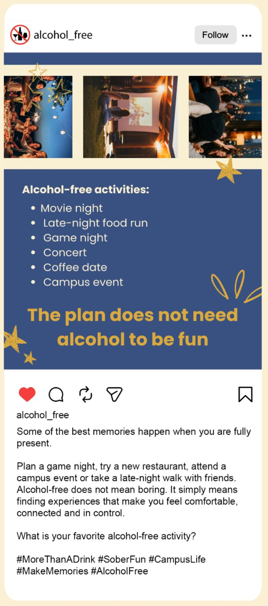
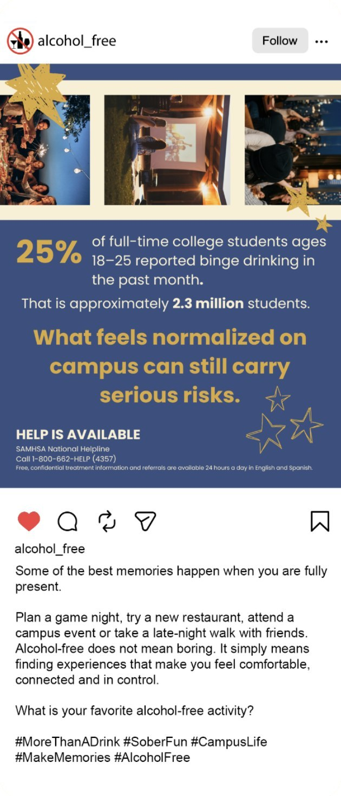

A Night to Remember
An alcohol awareness campaign for college students.

- Role
- Graphic Designer
Print collateral - Timeline
- May – June 2026
- Tools
- InDesign
Illustrator
Photoshop
Overview
A Night to Remember challenges the belief that drinking is necessary to have fun or fit in. Through positive, relatable messaging and engaging experiences, the campaign promotes real connection and healthier choices.
- 4designers
- 3print, physical & digital
- 4campaign pieces
I worked with three other designers, each owning one part of the campaign: print collateral, a 3D photobooth mockup, stickers, and a social media post. Every piece shared one nightlife-inspired identity, so the campaign read as a single voice on a poster, at an event, or in a feed.
Team
- Katie Lee2D print collateral
- Sara Coughlin3D photobooth
- Sasha TanguayBrand collateral: stickers
- Aishwarya VenkateshwaranSocial media
Even with different roles, we stayed in close communication throughout, aligning on how the brand should look and sound, from color choices to wording, so every piece felt like part of the same campaign.
The problem
25% of full-time college students ages 18–25 reported heavy drinking in the past month.
Alcohol abuse is widespread among college students and often normalized within campus culture. While it's seen as harmless fun, excessive drinking can lead to poor decision-making, health risks, academic challenges and long-term substance abuse.
Source: 2024 National Survey on Drug Use and Health (NSDUH)
Brand identity
Type & color
- #faefd4
- #dcaa3c
- #385080
- #3e406f
- #323432
The visual language was designed to feel like a night out: energetic, engaging and far from serious. Midnight blues and charcoal set the scene, lit up by a vibrant gold. Instead of a traditional corporate pairing, Poppins Semibold is combined with the handwritten Gladiola script, making the brand feel welcoming and full of life.
Designed by Katie Lee
The poster delivers an important message about alcohol safety without feeling rigid or preachy. Deep blues and energetic pops of gold capture an authentic late-night atmosphere.
A clean, structured sans serif paired with a playful handwritten script keeps the tone approachable for a college audience, while the statistic and call to action stay easy to read. A QR code links students to sober-friendly ideas and events on campus.
Photobooth
Designed by Sara Coughlin
The Memory Booth takes the campaign beyond print as an interactive activation. Photobooths naturally draw a crowd at high-energy events; wrapped in the nightlife aesthetic with messaging like "More memories, fewer drinks," the booth delivers the message in a fun, non-intrusive way. Students leave with a keepsake that reinforces the idea that real connections don't require alcohol.




Stickers
Designed by Sasha Tanguay
A set of stickers gives the campaign a lasting physical presence. Scenes of crowds and late-night hangouts in the blue and gold palette feel like authentic nightlife merch, and conversational copy keeps the message relatable rather than restrictive, turning an educational campaign into something students want to share.

Reflection
What working on a team taught you, how the shared identity came together, and what you'd push further next time.
Social media
Designed by Aishwarya Venkateshwaran
An Instagram carousel translates the campaign into a digital space. It balances the reality of campus binge drinking with a positive, actionable tone, offering realistic alternatives to alcohol-centric plans, while the shared blue and gold palette keeps the brand recognizable across every medium.


